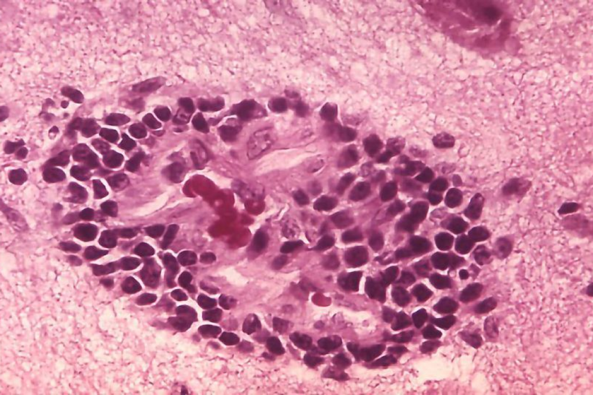

Treatment
Once clinical symptoms of rabies appear, the disease is almost always fatal. Therefore, treatment options for rabies once symptoms manifest are limited, and efforts primarily focus on palliative care to make the patient as comfortable as possible. These measures may include sedation to alleviate anxiety and agitation, pain management, and supportive care to address symptoms such as difficulty swallowing or respiratory distress.primarily through an induced coma and aggressive supportive care. This approach, known as the Milwaukee protocol, involves administering antiviral drugs and other medications while inducing a medically induced coma to reduce brain activity and potentially give the body's immune system more time to mount a defense against the virus.

Top Products used by the world:
1. Rabies vaccine (post-exposure prophylaxis)
2. Rabies immune globulin (post-exposure prophylaxis)
3. Wound cleaning and care
4. Sedatives and pain relievers
5. Antibiotics (for secondary infections)